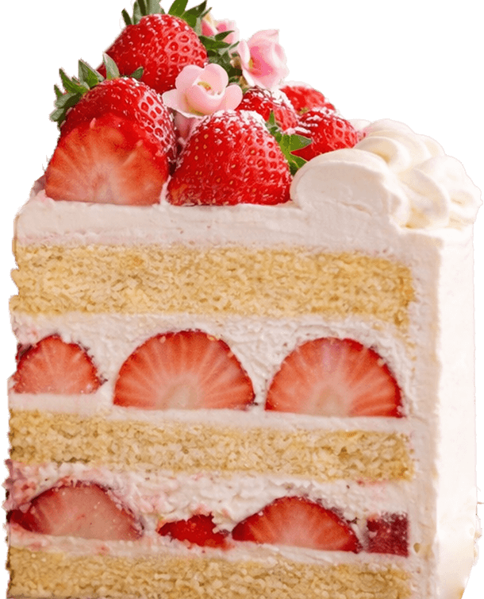
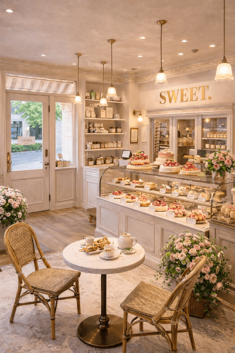
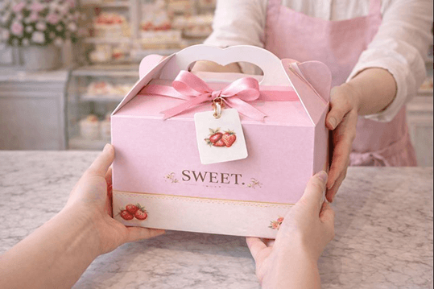

『SWEET.』が大切にしたいこと。
ケーキを通して、
人と人をつなぐ時間を。
私たちは、日常にも特別な日にもそっと寄り添う優しい甘さのケーキを
お届けしたいと考えています。
ひとつひとつ心を込めて仕上げたケーキが、誰かの笑顔や
温かなひとときにつながりますように。
5つの“こだわり”

1,イチゴへのこだわり
厳選した○○県産のイチゴを使用し、
甘さと酸味のバランスが最も良い状態のものを選んでいます。
みずみずしさと香りを大切に、ケーキに仕上げています。
2,生クリームへのこだわり
軽やかな口どけと、後味の良さにこだわった生クリームを使用。
イチゴやスポンジの味わいを引き立てる、やさしい甘さに仕上げています。
3,スポンジへのこだわり
ふんわりとした食感と、しっとりとした口あたりを大切に、毎日丁寧に焼き上げています。
どのケーキにもなじむ、やさしい味わいが特長です。
4,手づくりへのこだわり
一つひとつ手作業で仕上げることで、細かな部分まで心を配ったケーキづくりを行っています。
見た目の美しさと、おいしさの両立を大切にしています。
5,種類の豊富さ
定番から季節限定、新作ケーキまで、種類豊富にご用意しています。
一つひとつ丁寧に仕上げた、クオリティの高いケーキをお楽しみください。
厳選されたイチゴ
当店で使用しているイチゴは、○○県の豊かな自然の中で丁寧に育てられたものだけを厳選しています。
昼夜の寒暖差が大きい環境で育ったイチゴは、果肉がしっかりとしていながらもみずみずしく、口に入れた瞬間に広がるやさしい甘さとほどよい酸味が特長です。
収穫のタイミングにもこだわり、もっともおいしい状態のものを見極めて仕入れることで、ケーキに使用した際にもフレッシュな風味と美しい色合いを保っています。
生クリームやスポンジとの相性を大切に考え、イチゴ本来のおいしさが引き立つよう、一つひとつ心を込めて仕上げています。
店内の様子
白を基調とした優しい色合いの店内は。
落ち着いた雰囲気の中にも、あたたかさを感じていただける空間です。
ショーケースの中には季節のケーキをはじめ、定番のショートケーキなど、様々な商品が並び、
甘い香りに包まれながら、ゆっくりとお選びいただけます。
おひとりさまでも、ご家族やご友人とでも、ゆったりと心地よくお過ごしいただける空間づくりを心がけています。
お持ち帰りはもちろん、イートインスペースもご用意しております。また、ウェブストアからの店舗受け取り予約も可能です。


イベントやご褒美に、また何気ない日常のひとときにも。
季節ごとの味わいや、その日だけの出会いもお楽しみください。
店舗限定の商品も数多く取り揃えております。
ぜひお気軽にお立ち寄りください。